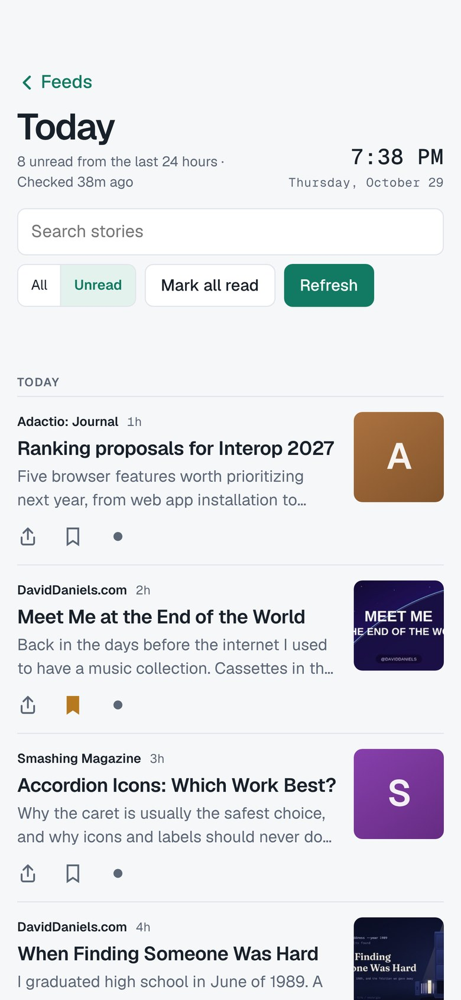

Read along early.
Try new versions of The Reading Room before they reach the App Store, and tell me what’s working and what isn’t.
Join the beta on TestFlightHow to join
Get TestFlight. It’s Apple’s free app for trying beta software. Install it on your Mac, iPhone or iPad.
Open the invite. Use the Join button on this page, on the device you want to read on.
Install and read. TestFlight offers each new version as it comes out.
In the beta now
Version 1.2.3: build 86 on the Mac, build 92 on iPhone and iPad.
- Settings. Importing and exporting feeds, Feed checkup, Muted words, Rules & alerts, Your year, your accounts and sync now live together in Settings, at the bottom of the sidebar.
- Light, sepia or dark for the whole app. Choose in Settings, or let it follow your device.
- A tidier sidebar. People sits right under Today. Help Wanted joins Explore, and Books comes first in Library.
- Newsletters in their own folder. New newsletter addresses put their feed in a Newsletters folder, and you can now remove an address you no longer need.
- An easier guide. How to use this app opens with a list of its sections, so you can jump straight to the one you need. It now covers newsletters too.
- Pictures at the top of posts. When a writer gives a post a featured image, it now shows at the top of the story.
Something not right? Send feedback from TestFlight; a screenshot helps.
What to expect
This is unfinished software, so you’ll find rough edges. That’s the point. If something breaks or feels wrong, send feedback through TestFlight, or use the contact details at daviddaniels.com.
About your privacy
The app works the same as always: no account, no tracking, no ads. TestFlight is Apple’s service, and it shares crash reports, usage information and any feedback you send with the developer. Read the details.
